Join our lab
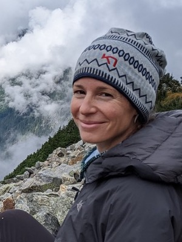
Amy Angert
amy.angert at botany.ubc.ca
Professor, University of British Columbia
Amy joined the faculty at UBC in 2012. Previously she was an assistant professor at Colorado State University, completed two years of postdoctoral research at the University of Arizona, and attended graduate school at the University of Washington and Michigan State University.
Current students and postdocs
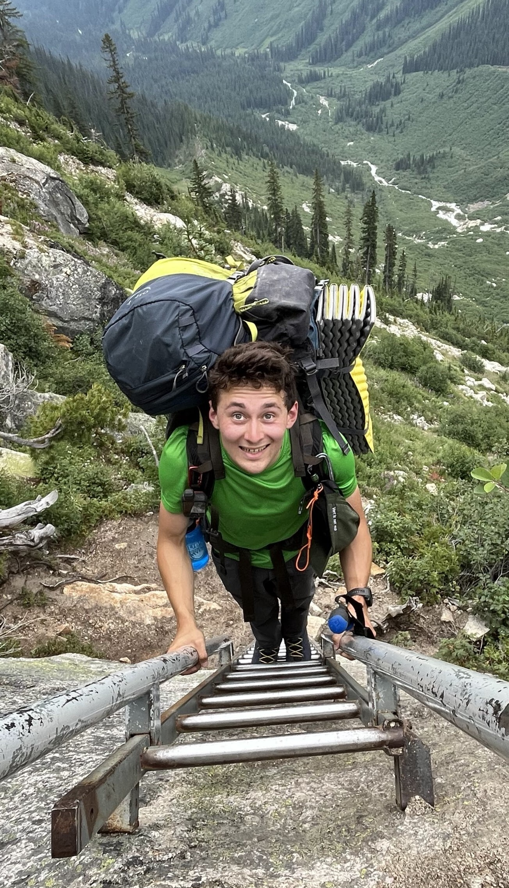
Jacob Aragones
jacob.aragones at botany.ubc.ca
MSc Student
Jacob is a MSc student interested in plant ecology and evolution, particularly in response to climate change. He is broadly interested in predicting species responses to human impacts and creating management tools to help land managers craft decisions to preserve biodiversity. During his undergrad, Jacob worked as a Wildland Firefighter in Oregon, where he gained a greater appreciation for the need to reconcile current research on climate change with land managers to achieve operational goals. Jacob graduated from UBC in 2024 with his B.Sc. in biology where he worked with the lab as a work learn. With the lab he also pursued an independent research project investigating the interactions of human recreation, herbivores and browse pressure on alpine plants. For his MSc work Jacob is resurveying occupancy of M. cardinalis across its range to quantify recent extinction and colonization dynamics across the species range.
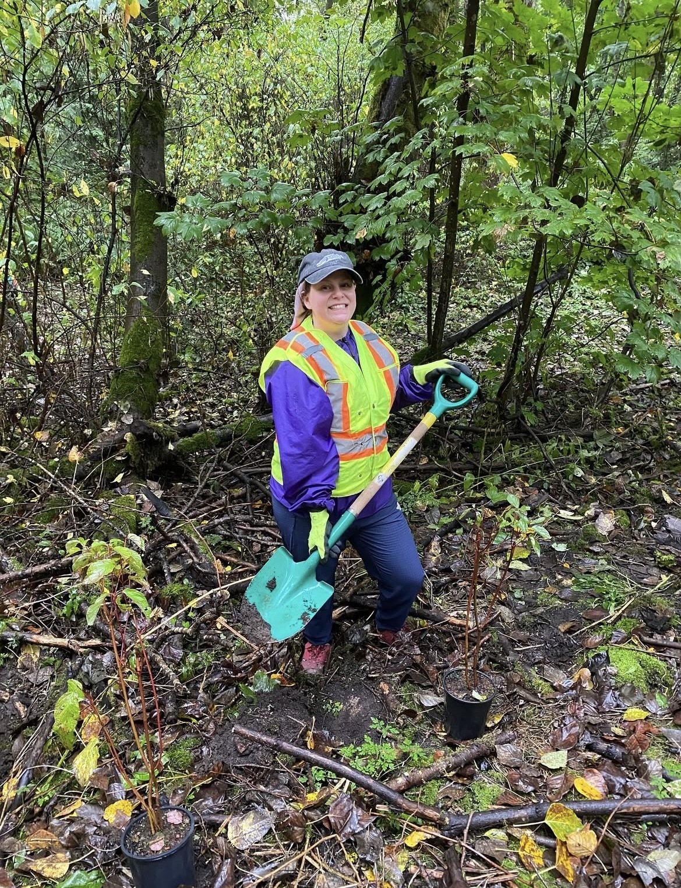
Juliet Kiester
juliet.kiester at botany.ubc.ca
PhD Candidate
Juliet is a PhD candidate in her third year. Her research focus is riparian restoration in a changing climate using focal species Rubus spectabilis (salmonberry). Juliet is investigating how the historical climate of multiple populations influences plant and population health in restoration sites between Squamish, BC and Remond, WA. Her research aims to provide seed sourcing and seed mix recommendations for restoration practitioners in the Pacific Northwest.
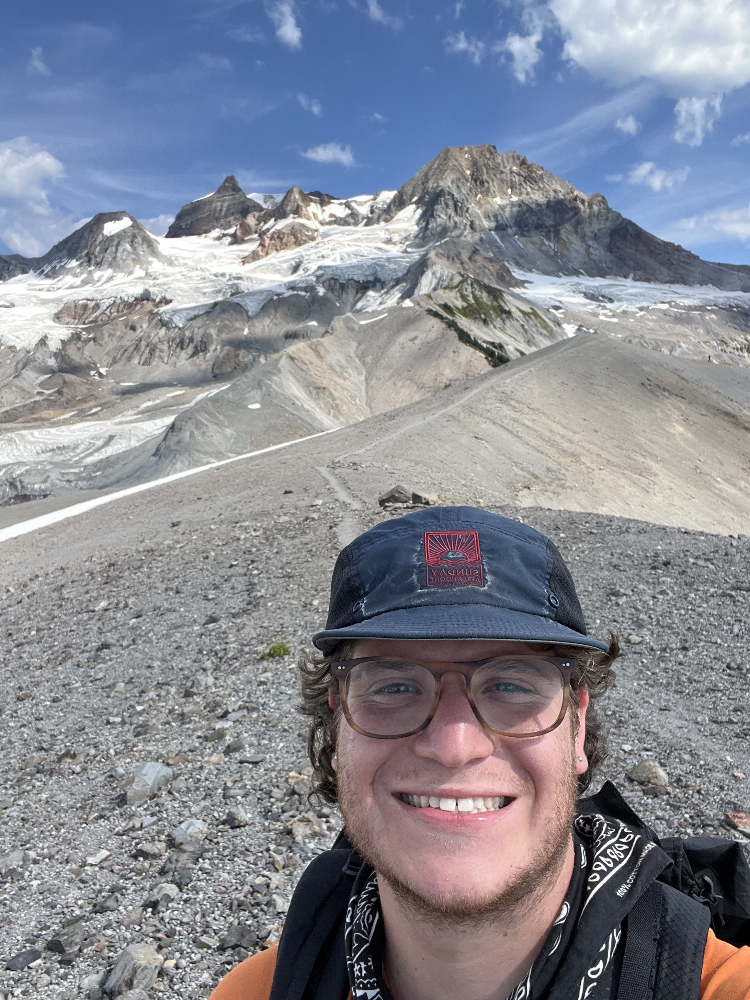
Evan Kohn
evan.kohn at ubc.ca
MSc Student
Evan is an MSc student co-supervised by Amy Angert and Courtney Collins. His research asks what role plant-microbe interactions play in mediating plant range expansion driven by climate change. Using a field survey and greenhouse experiments, his work aims to investigate how thin-leaf huckleberry (Vaccinium membranaceum) range expansion in Garibaldi (Nch’ḵay̓) Provincial Park is influenced by soil microbes. Evan completed his undergraduate degree at UBC and graduated in 2025 with an Honours in biology. He wrote his honours thesis on the functional mechanisms of kelp-microbe interactions.
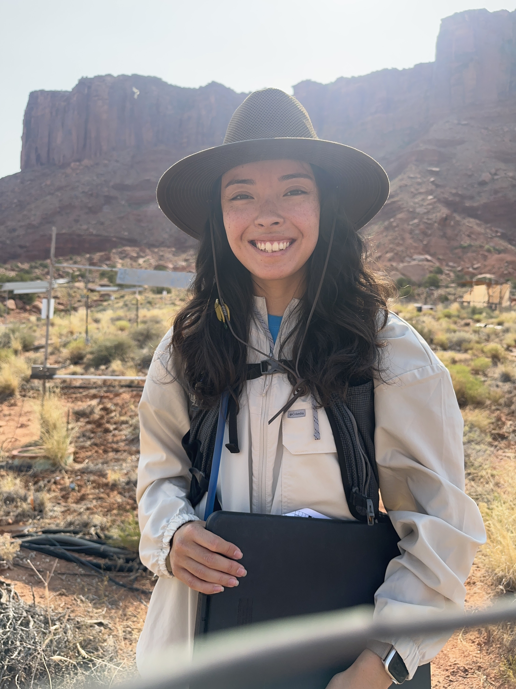
Jasmine X. Ryan
jasmine.ryan at botany.ubc.ca
PhD Student
Jasmine is a PhD student co-advised by Courtney Collins and Amy Angert. She completed her B.S. in Biology at the University of California, Los Angeles in 2024, where she found her appreciation for plant ecology. Before pursuing a PhD, Jasmine worked with the U.S. Geological Survey in Utah and contributed to a long-term warming experiment. In her PhD, she is interested in experimentally investigating the potential for climate-driven elevational range expansion in subalpine plants. Her work focuses on an over-the-edge transplantation study of Vaccinium membranaceum (Mountain Huckleberry) in Garabaldi (Nch’kay) Provincial Park and is nested within the larger research initiative, Alpine Horizons (https://alpinehorizons.ca/).
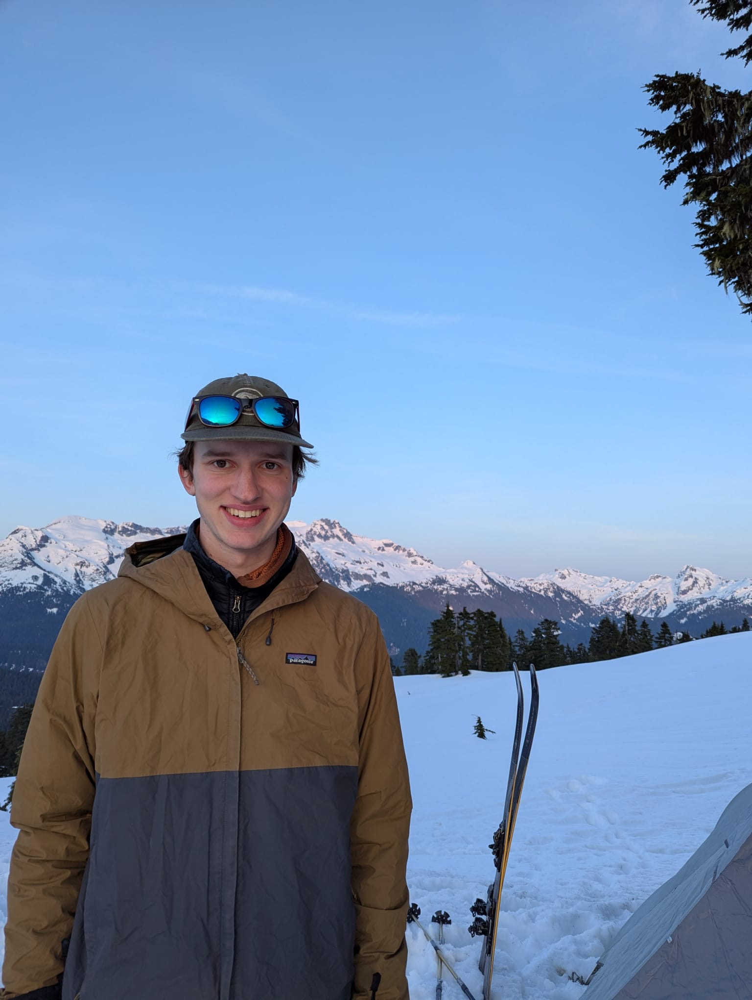
Sean Dempsey
sdemps02 at student.ubc.ca
NSERC USRA, 2026
Sean is an undergraduate student pursuing a B.Sc in Environmental Science at UBC. He is interested in how plant populations and communities respond to major disturbances, including climate change. Sean has worked in the Angert lab since 2024 as a work learn student. In 2026, he is studying how mycorrhizal associations with Vaccinium membranaceum vary along an elevational gradient in Garibaldi Provincial Park. This work is supported by an NSERC USRA and is intended to help inform ongoing research on Vaccinium ecology in the Coast Mountains.
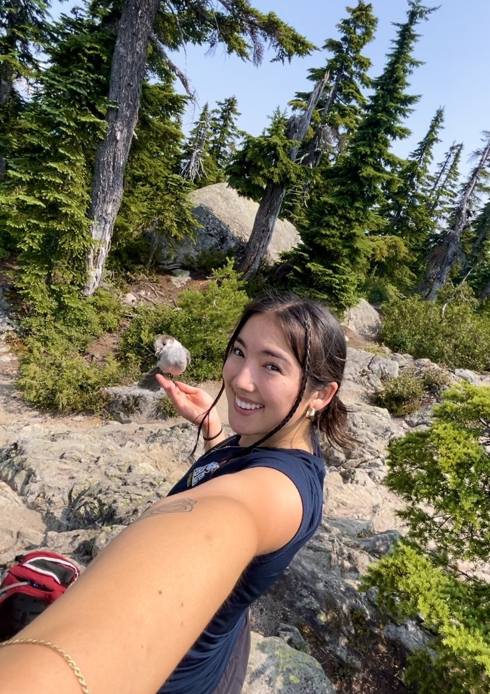
Casey Lo
caseymadelinelo at gmail.com
Honors Student
Casey is an Honours student supervised by Amy Angert, Courtney Collins, and Rachel Wilson, currently studying plant community ecology and climate-driven range shifts in mountain ecosystems. Working out of E.C. Manning Provincial Park, she uses long-term vegetation data, from the B.C. Ministry of Forests, alongside contemporary field resurveys to examine changes in species occurrence and community composition through time. Her work also explores how methodological challenges, such as plot relocation uncertainty, can influence the detection of ecological change. Through a combination of fieldwork and statistical modelling, she aims to better understand and quantify vegetation dynamics in a changing climate.
Lab alums
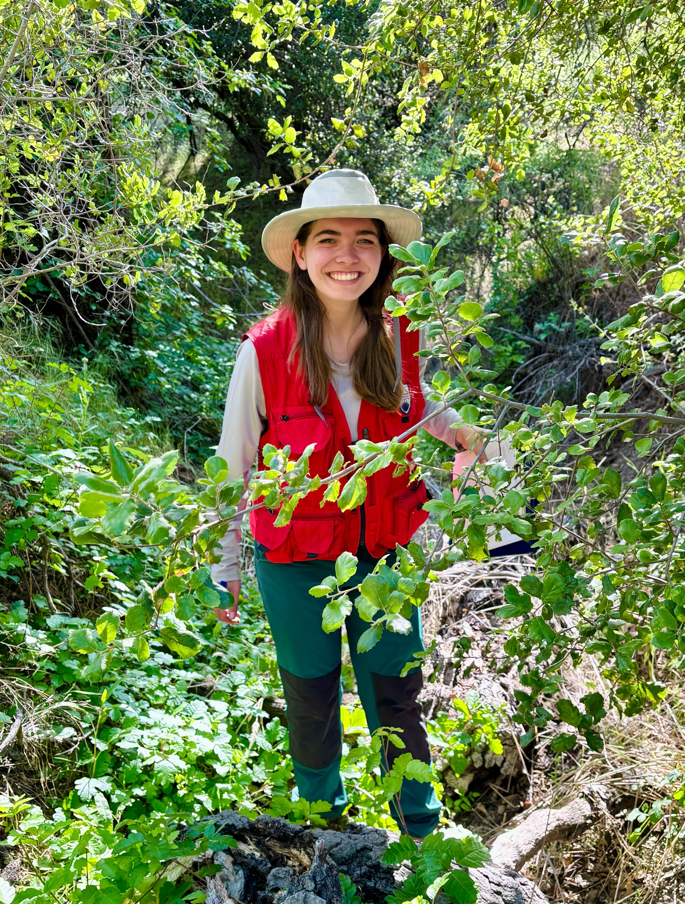
Alexandra Mykitiuk
NSERC USRA, 2025
Currently: UBC Honours student, Agriculture and Agri-Food Canada intern
Alex is an Honours Plant Biology student interested in how plants interact with and respond to their environment across multiple biological scales. She assisted Jacob in resurveying the occupancy of M. cardinalis across its range and examined new microhabitat variables related to riparian successional dynamics to improve its current ecological niche models. During the field season, Alex also acted as the lab’s unofficial trip reporter, keeping everyone back home entertained with daily photos and field updates. Alex is currently a research assistant at Agriculture and Agri-Food Canada investigating annual-perennial interactions in experimental intercropping systems. In summer 2026, Alex will join the AAFC Summerland Research and Development Centre to study invasive plants and their implications for agroecosystem sustainability and rangeland conservation. Her upcoming Honours thesis will examine the genetic basis of fruit colour variation in salmonberry.
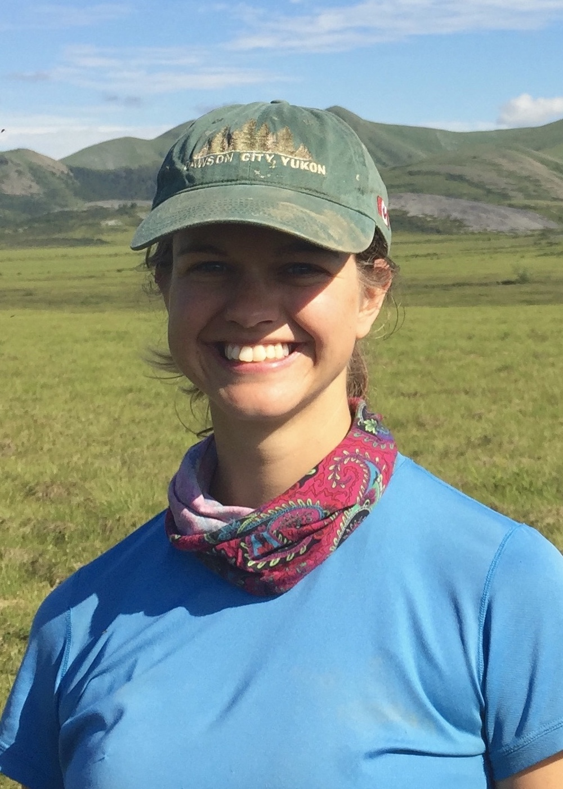
Katie Goodwin
PhD, 2020-25
Currently: Lead Plant Ecologist at Swamp Donkey Ecological Consulting
Katie is interested in disentangling the relative importance abiotic and biotic factors play in shaping species’ distributions. Using experimental demography, she investigated how temperature and herbivory impact population dynamics across an altitudinal gradient for Lupinus latifolius in the North Cascades, WA. Katie completed her MSc at Memorial University where she studied how demographic niches and suitable microsite availability influence latitudinal treeline advance in the Yukon.
Courtney Collins
BRITE Postdoctoral Fellow, 2021-2023
Currently: Research Climate Change Ecologist, Future Forests Ecosystems Centre, BC Ministry of Forests
Courtney maintains adjunct faculty appointments at UBC and SFU. Her research interests include alpine ecology, global change biology, plant-soil interactions, plant species range shifts, and soil microbial ecology! Before coming to Vancouver, she was a post-doc with Katie Suding and Sarah Elmendorf at CU Boulder (INSTAAR). Courtney completed her PhD in Plant Biology in the Diez Ecology lab at UC Riverside in 2019 and her Master's in Conservation Ecology in the Wurzburger lab at the University of Georgia in 2013.
Micah Freedman
Postdoctoral Fellow, 2022-24
Currently: Assistant Professor, University of Toronto
Micah is broadly interested in species interactions and contemporary evolution, with an emphasis on chemically-mediated interactions between insects and their host plants. Much of his research focuses on monarch butterflies and their milkweed host plants. For his PhD, he studied the ecological and evolutionary consequences of the recent global range expansion and loss of seasonal migration in monarch butterflies. As an NSF Postdoctoral Fellow at the University of Chicago, he studied the functional genomics of toxin sequestration in monarch butterflies. As a postdoc at UBC, he used cardenolide fingerprinting to study how migration patterns of western North American monarch butterflies have changed over the last 25 years.

Emma Menchions
MSc, 2022-24
Currently: PhD student, UBC Forest and Conservation Sciences
Emma is broadly interested in how climate change will affect species distributions, community assembly, and ecosystem function as well as how these insights can be applied to conservation and restoration. For her MSc thesis she used duckweed as a model system to study eco-evolutionary resident-invader dynamics; specifically, how invaders may influence the evolutionary trajectory of resident populations and the success of proceeding invasions. She also continued undergraduate research that seeks to improve climate threat assessments for the conservation of rare species in heterogeneous environments through ecological niche modelling.
Mackenzie Urquhart-Cronish
PhD, 2019-24
Currently: Research Scientist, Verbinnen's Native Plant Nursery
Mackenzie's PhD research focused on understanding the demographic pathways and genetic consequences of range expansion. She is interested in expanding on current evolutionary theory that predicts negative fitness consequences resulting from range expansion--or expansion load--by developing new models and conducting empirical investigations using natural populations of Erythranthe lewisii along contrasting spatiotemporal scales (e.g., latitudinal and elevational gradients). Specifically, she aimed to identify when and where we would expect the accumulation of expansion load to negatively impact long-term persistence of edge-populations in nature, which has implications for population-level responses to climate change. After conducting postdoctoral research in the Wright Lab at the University of Toronto, she moved into industry as a Botanist and Research Scientist at a native plant nursery.
Takuji Usui
PhD, 2018-23
Currently: Postdoc at University of Toronto
Takuji is interested in the eco-evolutionary processes that govern changes to species distributions. In response to environmental change, he is interested in the role of: (1) selective and stochastic evolutionary processes; and (2) species interactions in determining population dynamics at both the leading edge (e.g. range expansion) and trailing edge (e.g. evolutionary rescue) of the species range. In addition to these disequilibrial dynamics, he is further interested in the demographic and genetic processes that shape equilibrial (i.e. fitness and niche limited) range limits. To explore these themes in his PhD, Takuji set up novel, lab-replicated species ‘ranges’ using multiple coexisting species of duckweed to study the effects of evolution on range dynamics in real time.
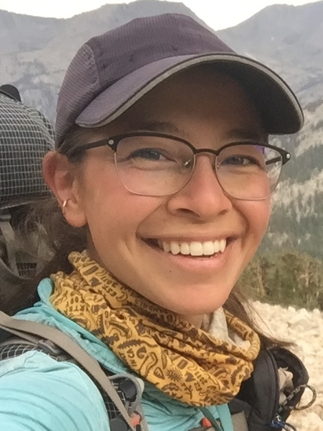
Lauren McBurnie
NSERC USRA student, 2022
Lauren is pursuing her BSc in Biology at UBC, and is broadly interested in how ecological factors influence evolutionary processes of species across landscapes. During the summer of 2022, Lauren studied the relationships between soil microbial composition, soil carbon sequestration and climate change-related variables across elevational gradients in the North Cascade Range, supported in part by an NSERC USRA.
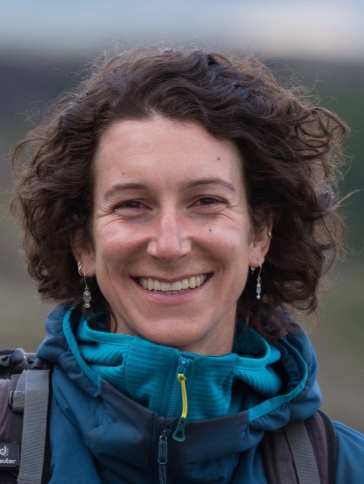
Nathalie Isabelle Chardon
Swiss National Science Foundation Postdoctoral Fellow, 2021-23
Currently: Director, St. Gallen Botanic Garden, Switzerland
Nathalie seeks to understand what drives species geographic distributions and how these will shift with global change. She is particularly interested in species distribution questions in arctic, alpine, and montane systems. In her postdoctoral work with the Angert Lab, she used data from a seed transplant experiment and mechanistic models to answer what will limit species range expansion in the Washington Cascade Range with climate change.
Haley Branch
PhD, 2018-23
Currently: NSF Postdoctoral Fellow, Yale University
Haley completed her MSc at the University of Toronto, where she studied the effects of heat stress on reproductive development in Trianthema portulacastrum, a desert plant. She is interested in how plant populations will respond to changes in environmental stresses due to climate change. For her PhD, she studyied the physiological and morphological responses of Erythranthe cardinalis after generations of exposure to a record-setting California drought.
Juniper Malloff
NSERC USRA 2021 & 2022, Honours student 2021-22
Currently: PhD student, University of Toronto
Juniper completed a combined honours degree in Chemical Biology at UBC. Their main interests are how climate change and other anthropogenic proceses will affect species interactions and community compositions, as well as how chemistry plays a role in insect-plant interactions. Juniper worked with Lupinus latifolius and the associated insect communities in the Northern Cascade mountains.
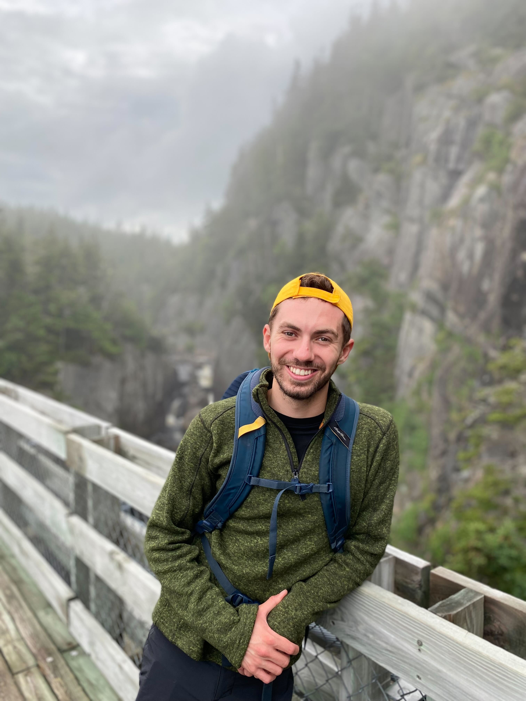
Graydon Gillies
NSERC USRA student 2020, 2021; Work-Learn student 2020 - 2022
Currently: PhD student, Memorial University
Graydon completed his BSc in Honours Environmental Sciences at UBC and is primarily interested in how climate warming impacts plant physiology and floral diversity. He was supported in part by NSERC USRAs in the summers of 2020 and 2021, during which he studied the effects of nutrient limitations across genotypes and temperature gradients in common duckweed Lemna minor.
Xianyu Yang
Visiting PhD Student, 2022
Currently: Postdoc, ETH Zurich
Xianyu was a visiting Ph.D. student from East China Normal University. Using forest and biodiversity inventory networks, he is interested in relating demographic strategies of tree species to climatic change and species distribution dynamics. Specifically, he focused on the effectiveness of demographic compensation on helping species to maintain distributional range boundaries, and the role of demographic buffering in understanding species coexistence in tropical and subtropical forests.
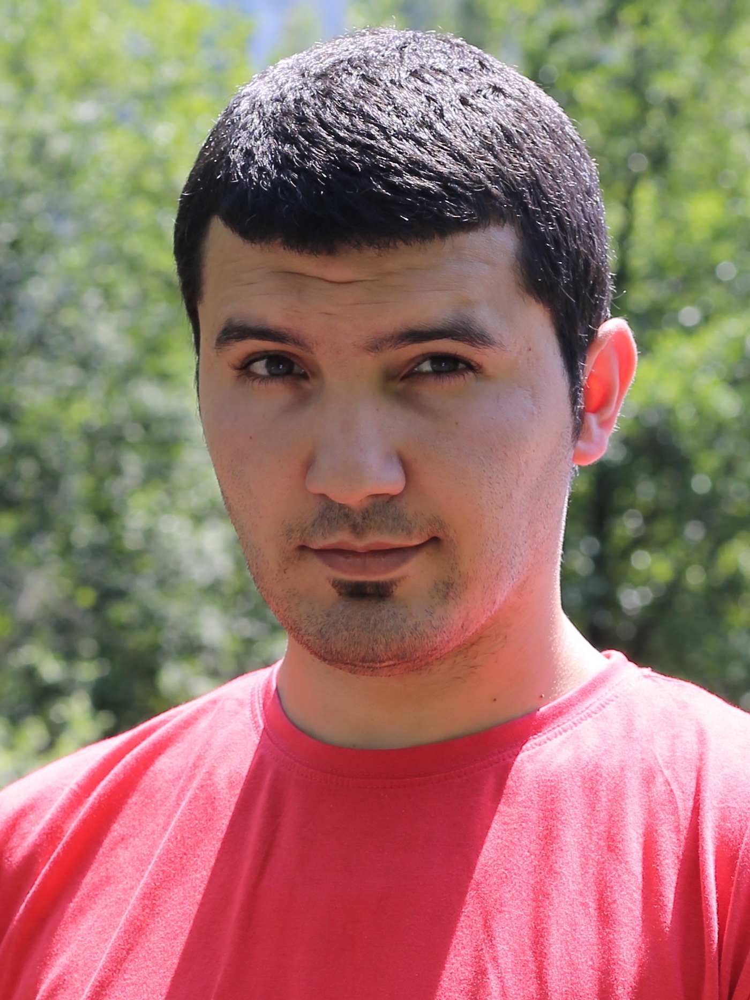
Rassim Khelifa
Swiss National Science Foundation Postdoctoral Fellow, 2018-21
Currently: Assistant Professor at Concordia University
Rassim works at the interface of environmental sciences and evolutionary biology to study life history plasticity, dispersal ecology, sexual selection, and conservation biology. At UBC he focused on changes in the distribution range of odonates across latitude and elevation in Europe. His main questions were: what drives the variability in the range shift of species? How can we predict future range dynamics of communities? How species respond to climate change across different geographic gradients.
Daniel Anstett
Banting and Killam Postdoctoral Fellow, 2017-2021
Currently: Assistant Professor, Cornell University
Daniel is broadly interested in the biogeography of species interactions. For his PhD he studied how herbivory and plant defence vary across a latitudinal gradient in common evening primrose. He also has an interest in landscape genetics, especially when considering adaptive traits. At UBC, he spearheaded a rebrrection study to investigate evolutionary rescue in the scarlet monkeyflower.
Rylan McCallum
NSERC USRA 2019, Directed Studies 2020
Currently: Medical student, University of Manitoba
Rylan is interested in understanding how species interactions and local diversity will be impacted by climate change. He was supported in part by an NSERC USRA in 2019 and completed a study comparing the relative strengths of biotic interactions across elevational gradients in the North Cascades. He recently conducted a directed studies project in the lab looking at the generational effects of drought on Mimulus cardinalis.
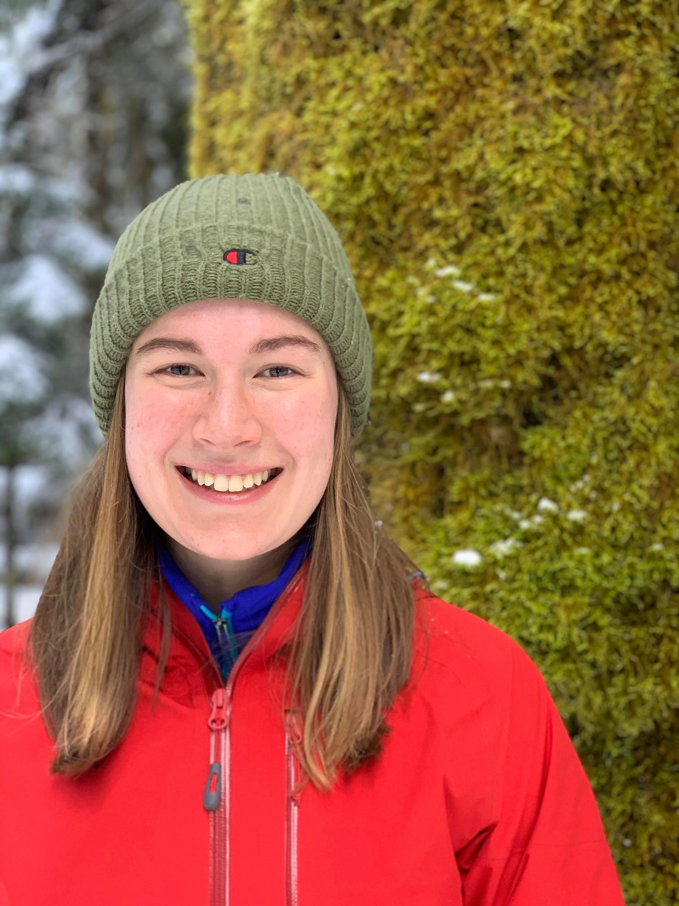
Olivia Rahn
SURE student & Directed Studies 2019, NSERC USRA student 2020
Currently: PhD Student, McGill University
Olivia held a research position in the lab funded in part by a Summer Undergraduate Research Experience (SURE) during summer 2019, and recently completed a directed studies project. Her research so far has focused on how traits related to fitness and adaptation in pink monkeyflower Mimulus lewisii populations change during the process of range expansion.
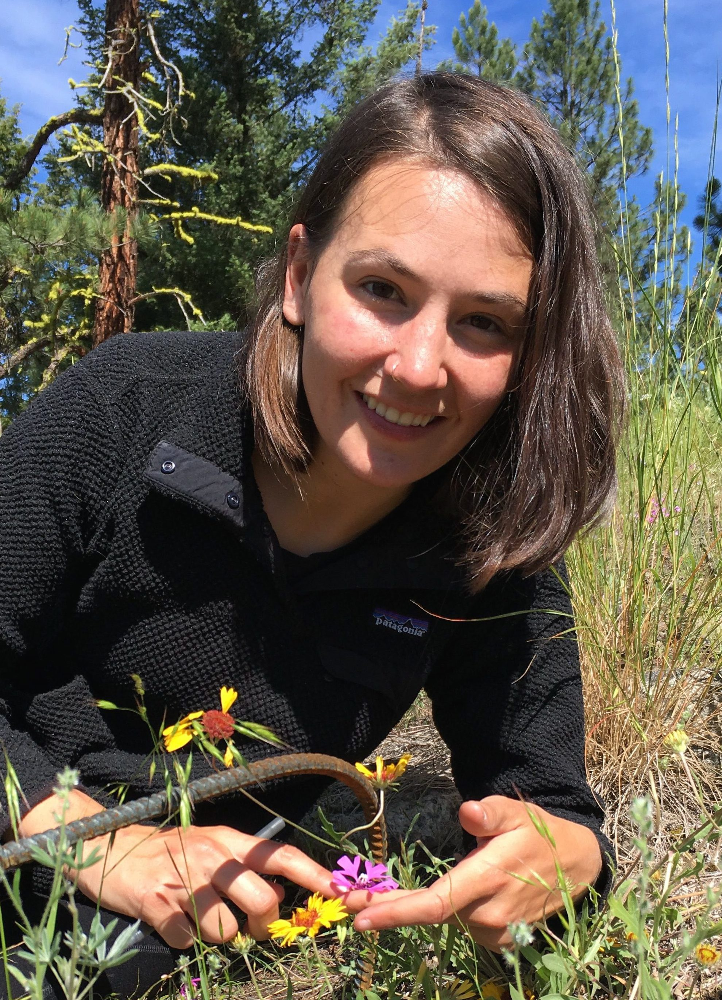
Megan Bontrager
PhD, 2012-2018
Currently: Assistant Professor, University of Toronto
Megan is interested in factors shaping species distributions and the adaptation of species to marginal habitats. She is particularly interested in the genetic and demographic contributions of pollinators to processes that limit species' ranges. During her thesis, she investigated how gene flow and genetic structure across heterogeneous landscapes contribute to shaping ranges. She pursued these research directions using the annual wildflower Clarkia pulchella as a focal species. Her thesis work used field experiments in natural populations, common gardens at the range edge, and population genomics.
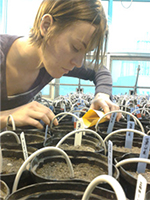
Rachel Germain
Biodiversity Postdoc, 2016-2018
Currently: Associate Professor, University of British Columbia
Rachel studies historical contingencies in ecology; how events that have occurred few, tens, or tens of millions of years in the past can have persistent effects on present-day ecological dynamics. Her current research tests how species' histories of competitive interactions have driven evolutionary divergence through the phenomenon of character displacement (CD). She aims to reinvigorate CD research by using methods that (i) have more power to detect CD, and provide (ii) a clear mechanistic understanding of how CD manifests, (iii) its strength relative to other evolutionary drivers, and (iv) its consequences for competitive outcomes among competing species.
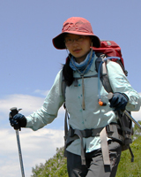
Qin Li
PhD, 2012-2017
Currently: Associate Professor, East China Normal University
Qin's research interests are generally in macroecology, evolution, and biogeography. Qin received her BSc in Biology and MSc in Ecology from Beijing Normal University where she studied wildlife monitoring (e.g., infrared-camera trap for Amur tiger and other mammals) in boreal forest in northeastern China, as well as species distribution modeling for plants. Qin's thesis work focussed on niche divergence across the Mimulus genus, considering phylogenetic relatedness, evolutionary processes, and geographic distribution attributes, using a combination of techniques (modeling, field work, and greenhouse experiments).
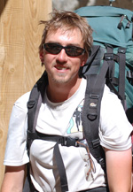
Chris Muir
Biodiversity Postdoc, 2013-2016
Currently: Assistant Prof at U Wisconsin Madison
Chris is an evolutionary biologist who uses ecophysiology as a way to connect fitness tradeoffs to local adaptation and speciation. The goal of Chris's research is to renew and advance an evolutionary physiology synthesis in plants using comparative methods, genetics, field studies, and theory.
Rachel Wilson
MSc student, 2014-2016
Currently: Ecology instructor, UBC
Rachel backpacked all over the North Cascades to resurvey legacy vegetation plots and assess changes in species' distributions along elevation gradients. She found that most species have not shifted their ranges over the past 30-40 years, despite substantial increases in winter temperatures, unless fire disturbance provided an opportunity for community reassembly.
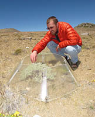
Chris Kopp
Postdoctoral Researcher, 2014-16
Currently: General Manager, Westside Gutters
Chris is interested in how plant species in mountain environments have responded to recent climate change and how they will respond to future climate shifts. This interest includes understanding direct responses to climate as well as outcomes of novel species interactions. To test these responses, he employed techniques such as resurveys, repeat photography, species removal and warming experiments.
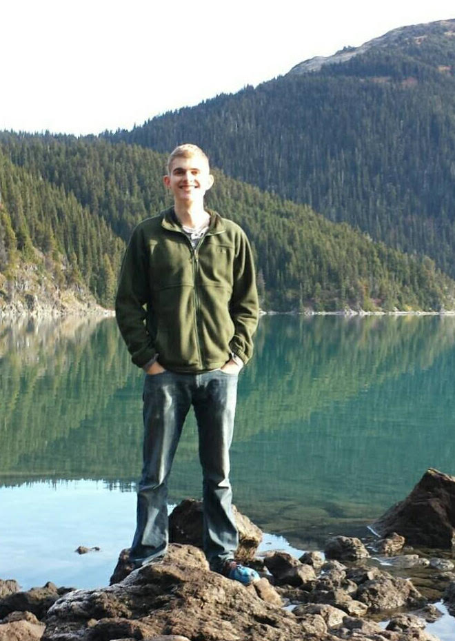
Devin Gamble
Honors thesis, 2017
Currently: PhD candidate at UC Santa Barbara
Devin looked at mating system variation among populations across the range of a mixed-mating wildflower (Clarkia pulchella). His work examined why populations differ in their reproductive strategy and which climatic factors drive selection for self or cross-pollination.
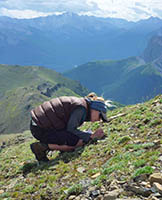
Anna Hargreaves
Biodiversity Postdoc, 2014-16
Currently: Associate Professor, McGill University
Anna is interested in the ecology and evolution of species interactions, species’ range limits, and their interface. Her research uses field experiments, theoretical and empirical syntheses, and simulation models to explore the evolutionary ecology of range limits and biotic interactions, especially pollination. She focuses on the relative importance of the abiotic environment, biotic interactions, and dispersal in limiting ranges, and how variation in fitness, selection and adaptation towards range limits might impact future evolution of niche breadth and dispersal.
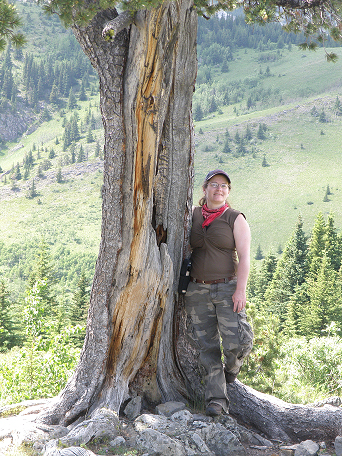
Barb Gass
MSc student, 2014-16
Currently: Research Technician @ Agriculture and Agri-Food Canada
Barb worked on the physiolgoy and conservation of Limber pine (Pinus flexilis). She measured needle traits and quantified their variation and distribution along a latitudinal gradient to determine if they can be used as predictors of resistance to an invasive rust (Cronartium ribicola).
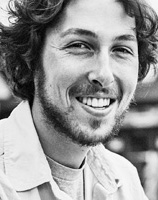
Matthew Bayly
MSc student, 2013-15
Currently: Principal, M.J. Bayly Analytics, Ltd.
Through field translocation studies, Matt investigated dispersal limitation at the northern range boundary of Mimulus cardinalis and conducted experimental tests of the predictions from ecological niche models.
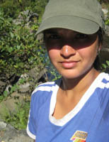
Seema Sheth
PhD, Colorado State University, 2008-14
Currently: Associate Professor, North Carolina State
Seema is interested in understanding the processes that shape the geographic distributions of species. Her PhD examined how species' traits influence the limits and sizes of species' ranges across the genus Mimulus.
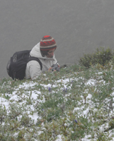
Anna Mária Csergő
Research Associate, 2012-13
Currently: Associate Professor, Hungarian University of Agriculture and Life Sciences
Anna asks: How are population dynamics are affected by environmental variability? What are the mechanisms linking traits, environment and biotic interactions to spatial population dynamics? Can the variation in demographic rates be predicted from the position of populations within the geographic range and within ecological niche space? Which demographic rates may signal persistent or shifting geographic ranges? She answers these questions by linking range-wide variation in population dynamics to spatially explicit predictions of habitat suitability.
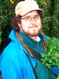
John Paul
Postdoctoral Researcher, Colorado State University, 2008-12
Currently: Professor, University of San Francisco
John uses a coalescent framework to infer demographic histories across species' ranges and test competing range limit hypotheses. His prior work examined species distribution and abundance from a phylogenetic perspective, asking if age is related to range size and how phylogenetic relatedness structures assemblages.
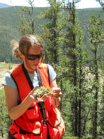
Erin Borgman
M.Sc., Colorado State University, 2011-2013
Currently: Ecologist, National Park Service
Erin's project involved examining maternal effects in long-lived plant species to better account for the impact of the maternal environment during offspring development on early seedling growth. She also explored the degree of genetic differentiation among limber pine populations in the Southern Rocky Mountains to help improve the success of conservation actions.